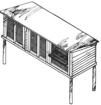
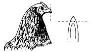
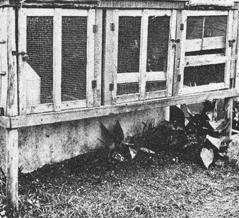
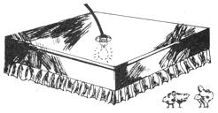
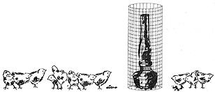
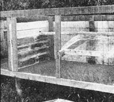
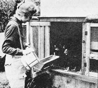
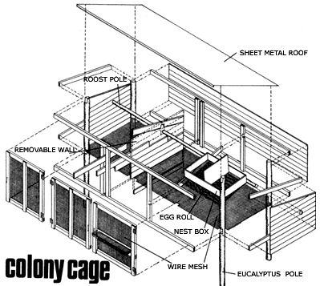

Many town and city dwellers are becoming interested in homesite farming these days . . . and, where local ordinances permit, such an operation might well include a small flock of poultry. If you've always wanted to keep a few chickens, but held off because you thought that the project required more room than you can spare from your limited plot . . . well, it doesn't have to!
When necessary, although they won't be as happy as they would in a large run, chickens can be kept in a very restricted area and still enjoy good health and a reasonable degree of comfort. That's the goal I had in mind when I planned the cage you see in the accompanying illustrations. The coop measures 7-1/2 by 3 feet and provides brooding, growing, and laying facilities for 10 to 12 birds . . . enough to produce half a dozen eggs a day, which is more than sufficient for the average family. If you live in a mild climate where temperature, seldom drop to freezing, this system may be just right for you.
On the other hand-though I believe the cage is well suited to Fig 1 backyard poultry-keeping in the more temperate areas in the U.S.-it wasn't invented for that purpose. I designed it the island of Mauritius (where I served as a micro-farming specialist with the Peace Corps) for use by the Rural Reconstruction Project, a division of the Mauritian Economic Planning Unit.
Mauritius lies off the African coast to the east of Madagascar, and its climate forced me to a compromise between my own inclinations and the realities of life in that latitude. Personally, I prefer to keep chickens in roomy grow ground enclosures . . . but because of the severity of coccidiosis in many tropical countries, such confinement often proves less humane than the clean environment of a cage.
Colony cage, complete with burlap blinds
and egg shelf.
On the other hand, I hate battery cages. To allow a bird only enough room to stand and sit-without even space to turn around-is incredibly cruel. The EPU colony cage is, I think, by far preferable . . . and even offers a few advantages over the admittedly more natural surroundings of the conventional chicken run:
Fig 2
[1] Ease and economy of construction
[2] Increased efficiency, which allows you more time for other chores
[3] High percentage of clean eggs, and tow incidence of cracked or crushed shells
[4] Prevention of roundworms and coccidiosis-that nefarious chick killer-by means of the wire floor
[5] Easy collection of manure for use in the garden
Conversely, this system does give rise to a few problems (which are, however, easily prevented):
[1] In some cases the birds' droppings won't dry fast enough to avoid the breeding of flies. Manure should be removed weekly when such pests are troublesome.
[2] Since limited space inclines chickens to cannibalism, they should be debeaked (preferably before the onset of egg production). This operation is easily done on a young bird by removing the tip of the upper beak-just in front of the pad-with a sharp knife, scissors, or side cutters. (See Fig. 1.) To prevent bleeding and infection, cauterize the wound by placing a hot knife against the cut surface.
[3] The cage should be placed under shade to protect it from direct sunlight when temperatures are high. This is very important because the sheet-iron roof is an efficient conductor of heat. On windy or rainy days, burlap bags can be hung over the front of the coop. (According to some interesting test results, higher egg production can be maintained by protecting layers from wind . . . particularly during the winter.)
Fig 3
Colony cage, complete with burlap blinds
and egg shelf.
The colony cage shown in the plans with this article was built from the following materials:
[1] Packing crate boards (for back, sides, removable partition, central wall supports, and nest-box frame)
[2] Five eucalyptus poles (two 60-inch-long posts for the front uprights, two 54-inchers for the back, and an 8-foot roost pole)
[3] 50 feet of 1 X 3 lumber strips (frame)
[4] 8 feet of heavy wire mesh, 3/4-inch square or 3/4 X 1-inch rectangular (floor)
[5] 10 feet of 1/2-inch-square galvanized mesh . . . not the flimsy round type (doors and nest-box floor)
[6] Two raisin crates (nest boxes)
[7] One sheet of galvanized iron, 8 feet by 3 feet (roof)
[8] 2-inch straight nails, 3/4-inch U nails, flat-headed galvanized roofing nails, hinges
Here's how the "C" cage operates: Chicks are started in the left-hand compartment. Newspaper placed on the floor and topped with about 2 or 3 inches of wood shavings (crushed corncobs, cane fiber, peanut shells, etc.) will provide a soft absorbent litter to keep the young birds dry and clean.
A cardboard box, prepared as shown in Fig. 2 and fitted with a 60-watt electric light bulb, is placed in the rear of the compartment . . . or a kerosene lamp, surrounded by a wire basket chick-protector, can be substituted (see Fig. 3).
For seven to eight weeks the chicks are confined to the lefthand section of the coop, provided with heat, and fed from shallow troughs or pans of mash and water placed on the litter near the door. After that the box can be taken out, the partition removed, and the birds given the run of the cage.
A good food container for older birds is a trough feeder fitted on the inside of the middle door. By making this unit deep and filling it only half full, you can reduce wastage by beak-swinging hens. A simple gravity waterer is excellent for this type of coop, since its large volume ensures less work for you and plenty of clean, fresh water for the flock.
The particular cage on which the plans are based was fitted with a roost pole . . . which isn't absolutely necessary, but pleases the hens and gets them off the cold wire at night Such a pole should be painted twice with crankcase oil, which has been diluted half-and-half with kerosene, to protect the flock from bloodsucking mites.
The two nest boxes-which are adequate for 10 to 12 layers-must be kept darkened with a burlap blind to encourage use by the hens (since birds seek privacy and darkness at laying time). The 1/2-inch square mesh of the nest floor gives a bit under the occupant's weight and prevents the egg from cracking when it's dropped.
One disadvantage of the conventional henhouse is that eggs often accumulate in the nests and are sat on and kept warm when other hens enter the boxes. Naturally, the quality of the layings deteriorates very quickly under these conditions, and cracks and breakage often result In the "C" cage, this problem is eliminated by a slanting nest-box floor which rolls the freshly laid eggs to an open air shelf. They cool quickly in that container and can be gathered whenever their collection is convenient.
As the hens' production declines, the partition can be replaced and preparations made for a new batch of chicks.
I've already pointed out, of course, that I don't regard the above system as ideal . . . but where little space is available, or ground enclosures are hazardous to a flock's health, the colony cage is a workable and humane alternative to the usual form of close confinement. Perhaps some of MOTHER's readers will find it useful. Good farming!
|
 Colony cage, complete with burlap blinds and egg shelf. |
 Colony cage, complete with burlap blinds and egg shelf. |
 TFloor of nest box is ready to be stretched and nailed. |
|
 Trough feeder filled just halfway foils sloppy eaters. |
 |
 |
|
 |
 |
|